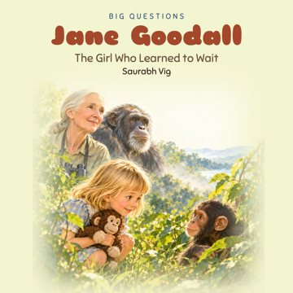
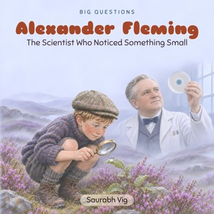
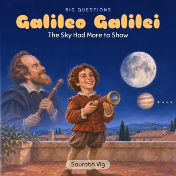

Little Scientists
My Observation Journal
Every scientist in our books started by noticing something small. Now it’s your turn!
This journal belongs to:

Jane waited
She waited for hours to see a hen lay an egg.
Alec noticed
He spotted a fuzzy mould on a forgotten dish and wondered why.
Galileo looked again
He looked at the Moon through his telescope and found mountains.How to be a little scientist
1. Look closely
Use your eyes and ears. Take your time.2. Draw it
Draw exactly what you see, even the tiny bits.3. Wonder
Ask a question: why? how? what if?4. Look again
Test your idea, or look again another day.Stay safe: look, don’t touch, when you are not sure what something is. Never touch or sniff mould. Never look straight at the Sun, even with a magnifying glass or telescope.
Free printable from tarkasatales.com · Goes with the Little Scientists books© 2026 Saurabh Vig